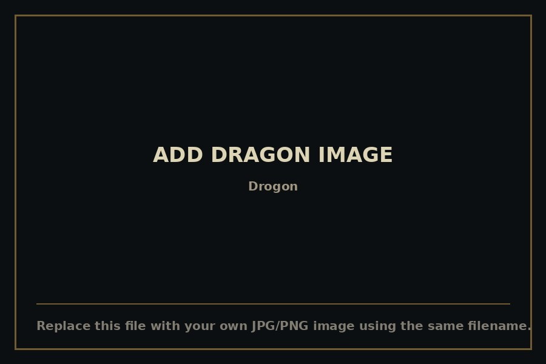

Drogon
Rider: Daenerys TargaryenThe largest and wildest of the three, black as a moonless sky with scales that catch fire-light like scorched glass. He answered to almost no one — and eventually decided that included empty chairs. Named for Daenerys's late husband, he outlived every other dragon in the story and flew off into the east, never confirmed dead.
VIEW DETAILS ↗